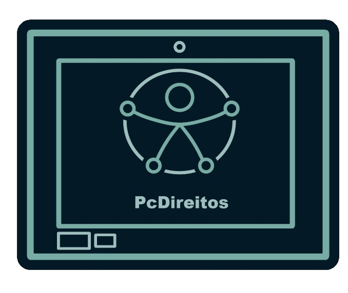

Deficiência visual
Descrição de imagens, bom contraste e compatibilidade com leitores de tela.

Pessoas com direitos
Inclusão na prática
Medida que adotamos nesse site para garantir a acessibilidade
Para garantir a máxima acessibilidade, o botão "A+" foi posicionado em um local de destaque e fácil alcance: o canto inferior direito da janela do navegador. Essa localização é um padrão comum em muitas interfaces, tornando-o intuitivo de encontrar para usuários que já estão acostumados com esse tipo de ferramenta de acessibilidade.
alt) em todas as imagens.Descrição de imagens, bom contraste e compatibilidade com leitores de tela.
Legendas e transcrições.
Navegação possível apenas pelo teclado e áreas de clique amplas.
Linguagem simples, frases curtas e organização previsível.